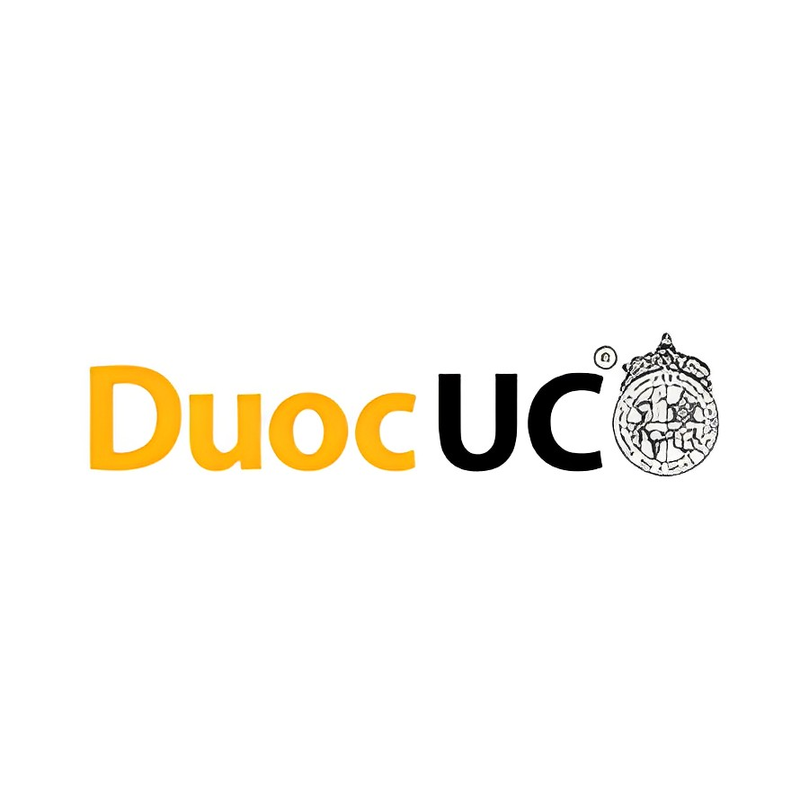
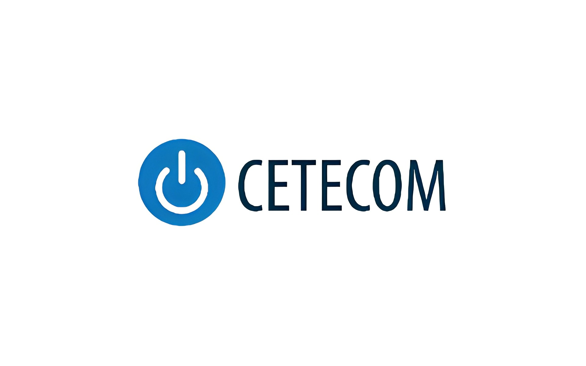

DuocUC
Profesor de Ayudantías en Python
Trabajé durante unos meses como profesor de clases de ayudantía en la asignatura de
programación de Algoritmos y Estructuras de Datos en Python, en la cual enseñé a los alumnos
las bases de la programación, tanto su estructura como su lógica, y también las bases de
Python.

CETECOM
Mantención general de Equipos Tecnológicos
Me encuentro actualmente realizando mi práctica profesional en CETECOM. Me desempeño como
técnico de mantención de equipos tecnológicos, en la cual me encargo de realizar la
mantención de los equipos de la 'empresa', tanto de hardware como de software, además de
realizar atención cliente ya sea de forma presencial o telefónica.